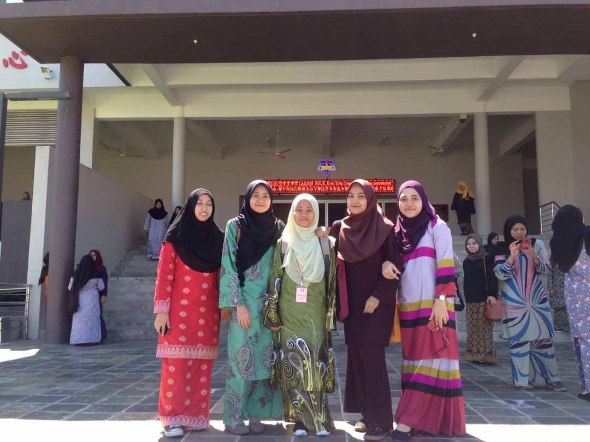
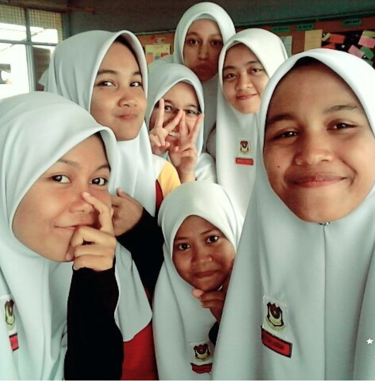
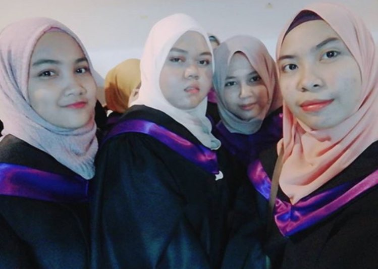
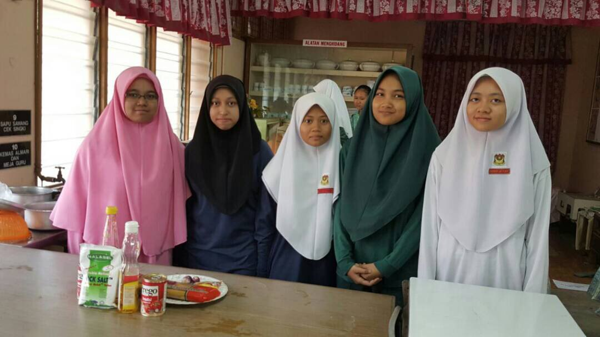
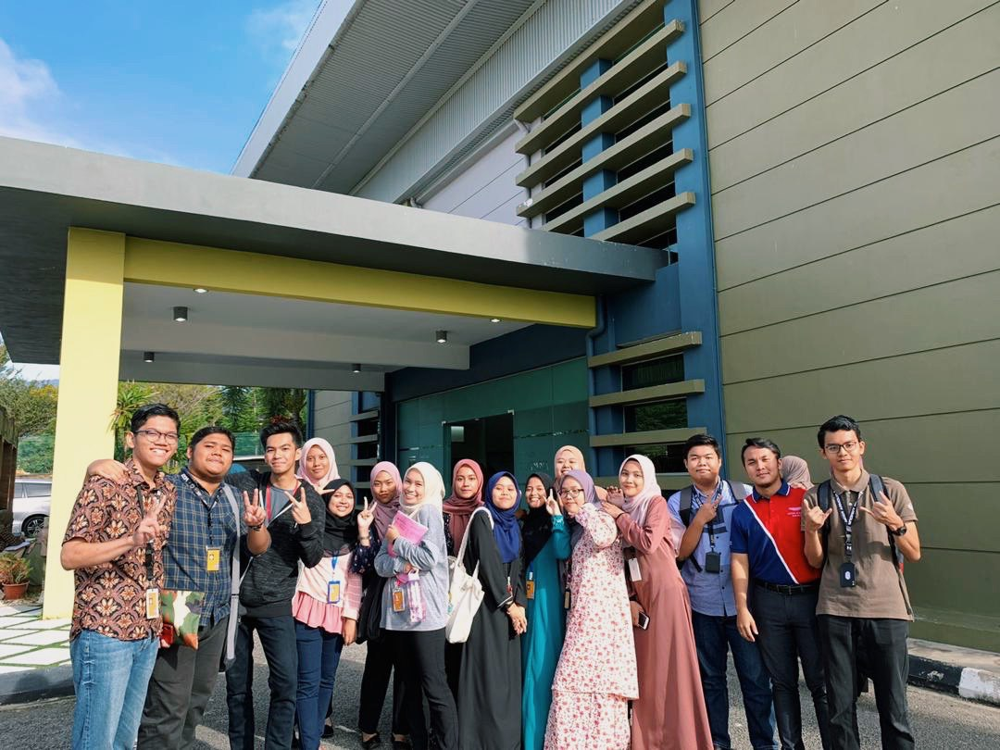
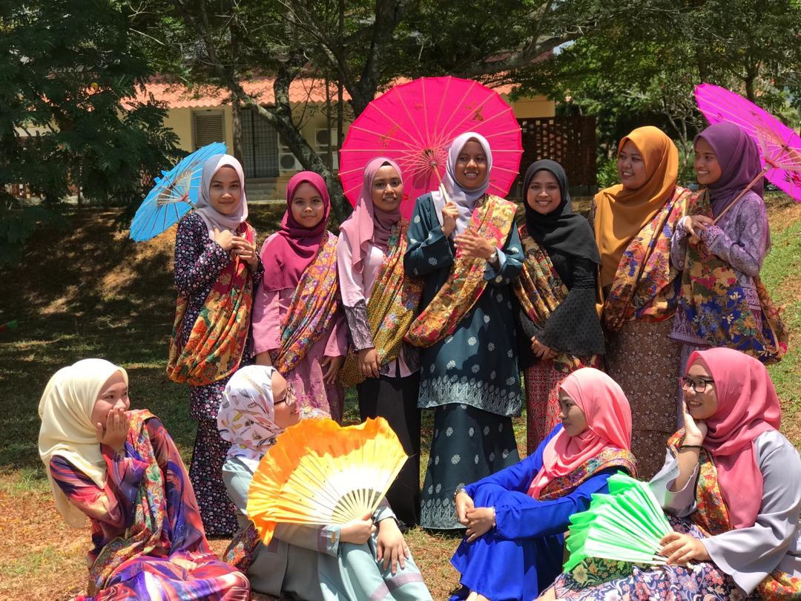
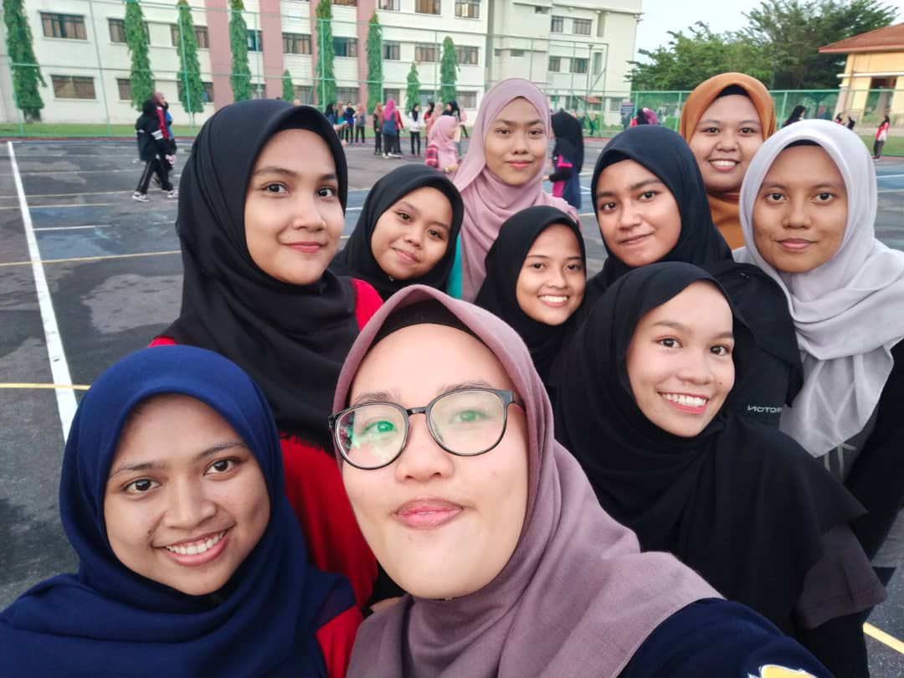
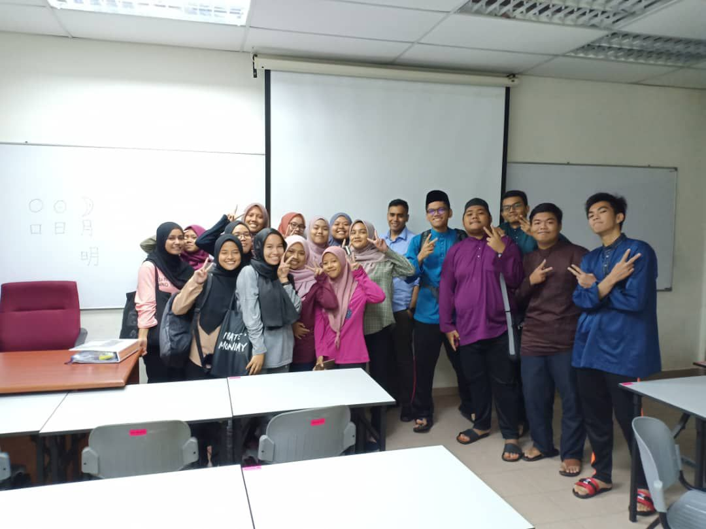
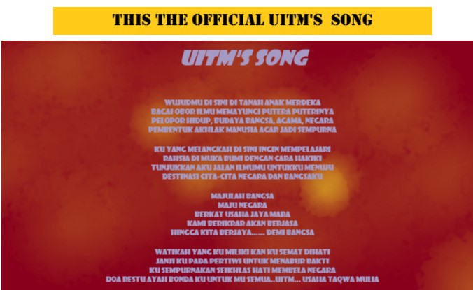

🙨 Education is an essential tool that imparts knowledge to improve life. Everyone needs an education in life. We cannot do anything without knowledge. Education improves one's skills, abilities, knowledge, attitude, and personality. Noteworthy, education narrows down the options of employment, providing an excellent job platform to a highly educated person. 🙨
My Education's Journey...
📐KINDERGARTEN📐
🔸I start from age 5 to 6 years old.
🔸My mom who is always send and pick me everyday.
🔸I have many friends there.
📔PRIMARY SCHOOL📔
🔸I started my primary school at Sekolah Kebangsaan Jalan Pegawai.
🔸Holding a position as a school superintendent for 3 years, from age 10 to 12 years old
🔸Also took religion classes in the evening after school hours.
🔸I love few subject while in primary school.I always score the best for these subject.
📝Secondary School📝
🔸Continued to secondary school at Sekolah Menengah Kebangsaan Tun Sharifah Rodziah which is schools reserved for girls only.
🔸Holding a position as a peer from 14 to 17 years old.
🔸Took tuition classes for subject that I am weak on which Mathematics
🔸I used to join various activities such as camping and sports day.
📂University Life📂
🔸Got an offer to study at UITM Merbok, Kedah in Faculty of Information Management.
🔸Studied in college just for a year and half because of pandemic covid-19.
🔸Started semester 3, I run with online distance learning which is from home.
💕Some of my Memories with my friends💕
🖍School Life🖍
   🎓University Life🎓
   
ADDITIONAL INFORMATION
I want to share a little knowledge taught in Pendidikan Islam's subject, which is my favorite subject. There are 4 people or 5 companions of the Prophet who became caliphs in turn on the day of the Prophet's death.Continue next story...👉